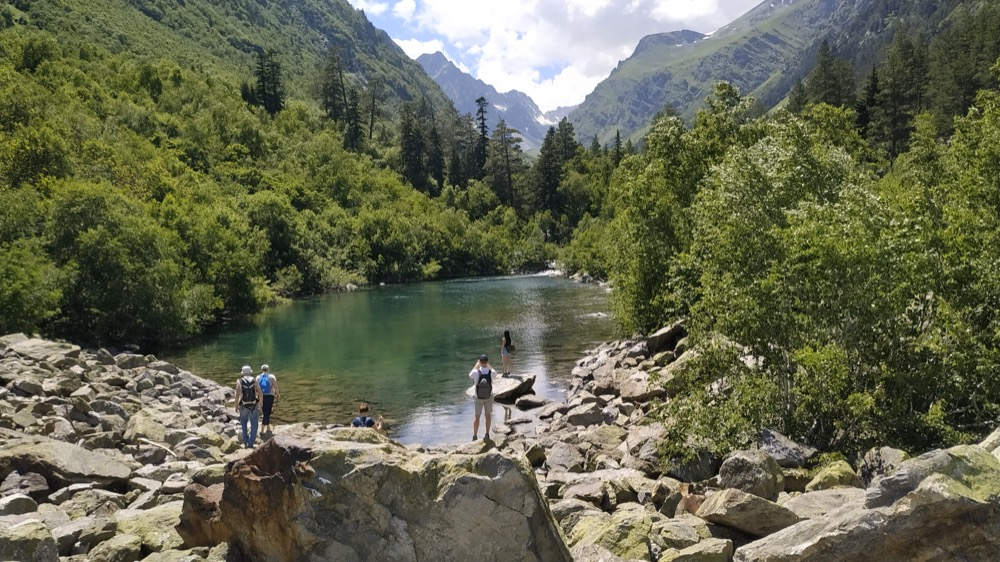
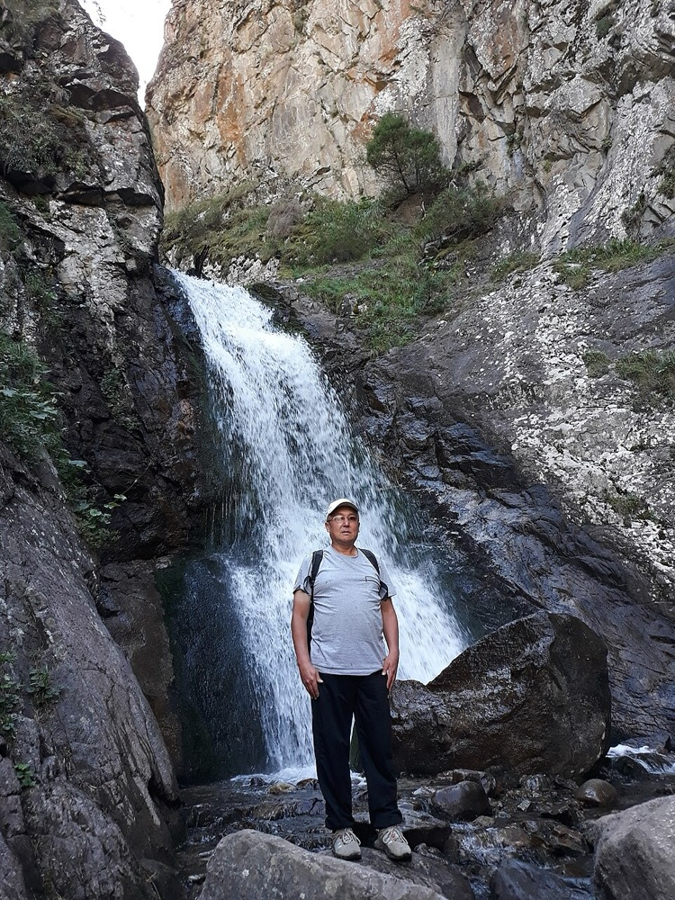
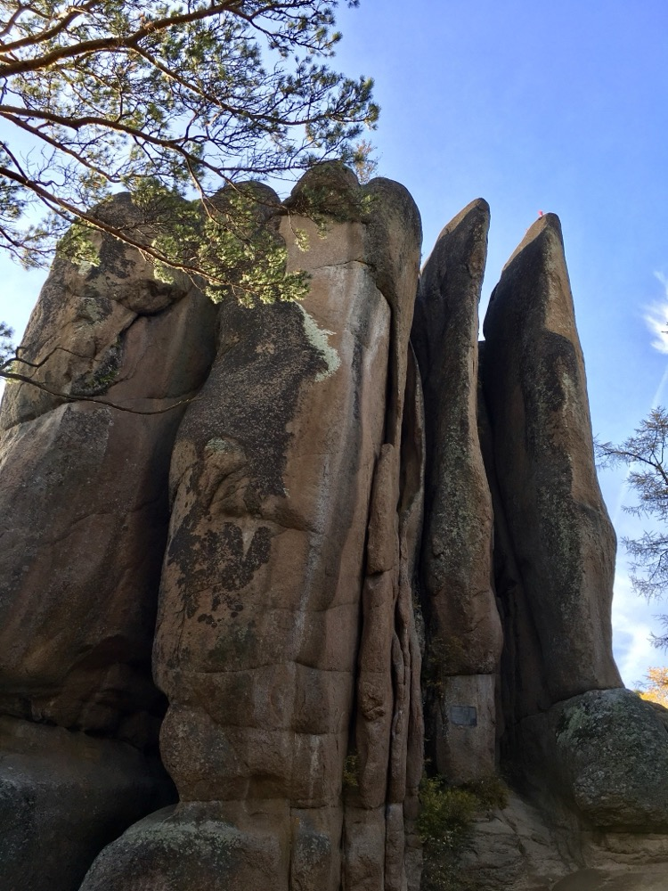

Карачаево-Черкесия
Бадукские озёра
Средняя 3,5 км в одну сторону
Тропа проходит через лес к каскаду из трёх горных озёр.
Подробнее: Бадукские озёраПрогулки на природе
Познакомьтесь с маршрутами, сравните расстояния и подготовьтесь к прогулке.
Выбрать маршрут
Краткая информация о тропе и название парка, опубликовавшего сведения.
Выбирайте по названию, региону, длине и сложности.
Список вещей и основные советы собраны на отдельной странице.

Карачаево-Черкесия
Средняя 3,5 км в одну сторону
Тропа проходит через лес к каскаду из трёх горных озёр.
Подробнее: Бадукские озёра
Карачаево-Черкесия
Лёгкая 0,5 км в одну сторону
Короткая лесная тропа к водопаду.
Подробнее: Водопад Шумка
Красноярский край
Средняя 2,5 км по описанию парка
Маршрут по Центральному скальному району национального парка. Подходит для знакомства с природными скальными формами.
Подробнее: Природа — великий скульпторВ каталоге собраны тропы Тебердинского национального парка и «Красноярских Столбов».
Подробнее о проектеВведите название или регион. Если хотите короткую прогулку, выберите длину до 2 км.
Посмотрите характеристики и узнайте, какой парк публикует актуальные условия.
Проверьте погоду, сохраните схему и отметьте нужное в списке подготовки.